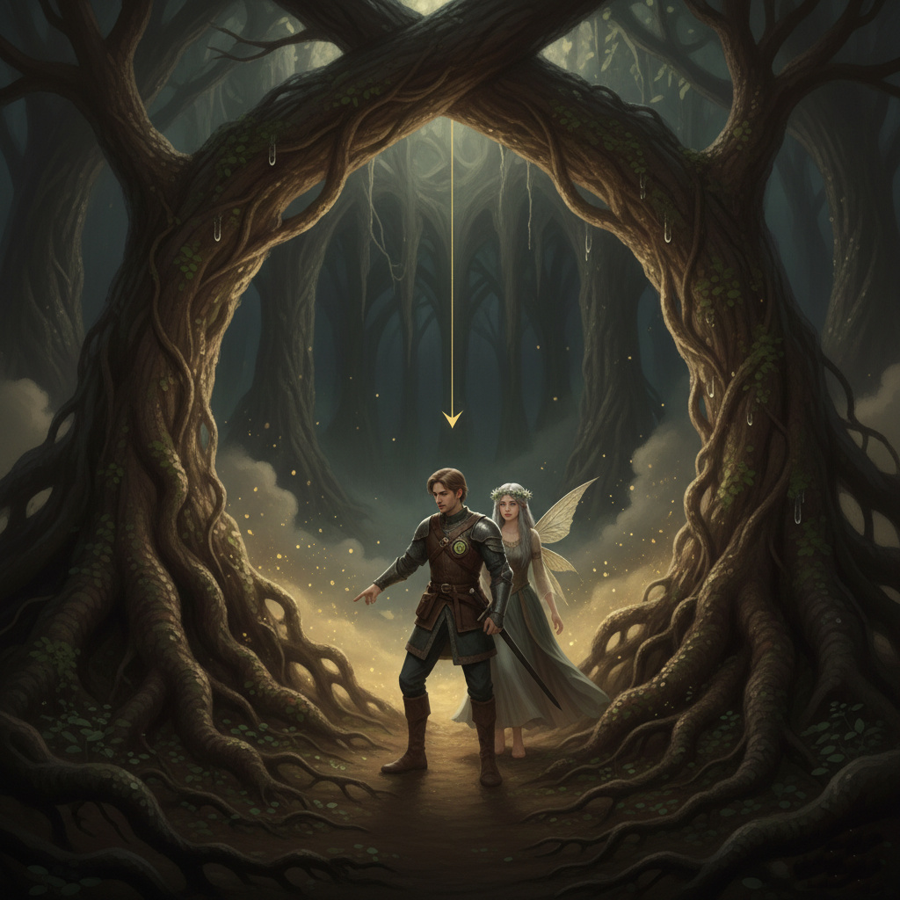
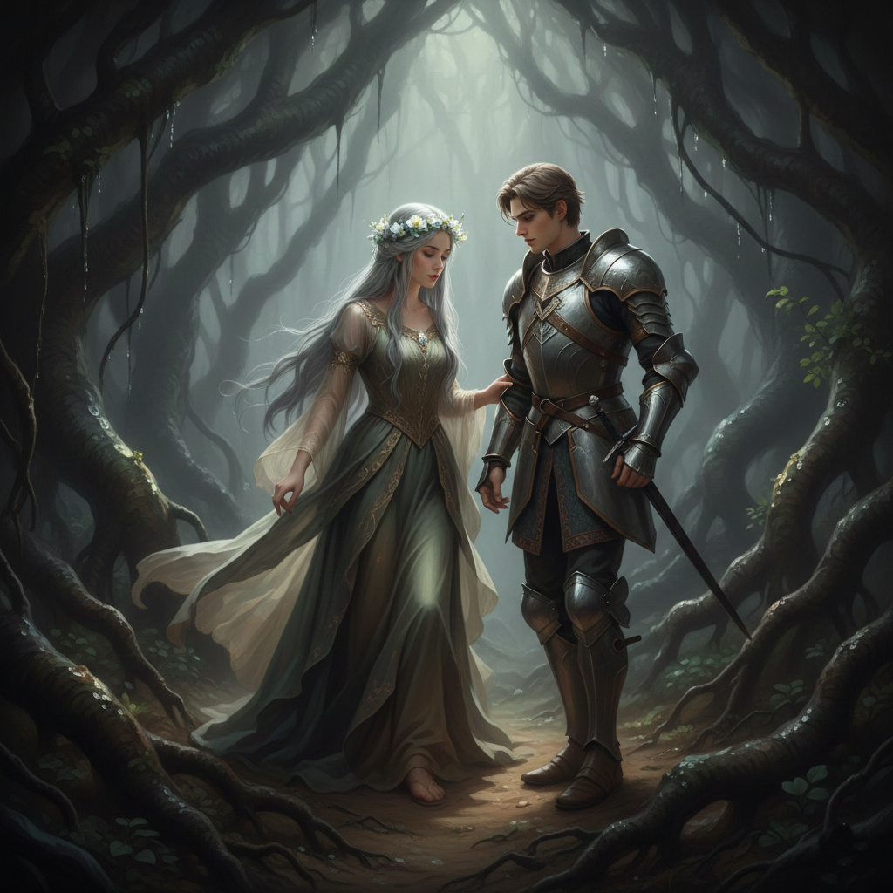
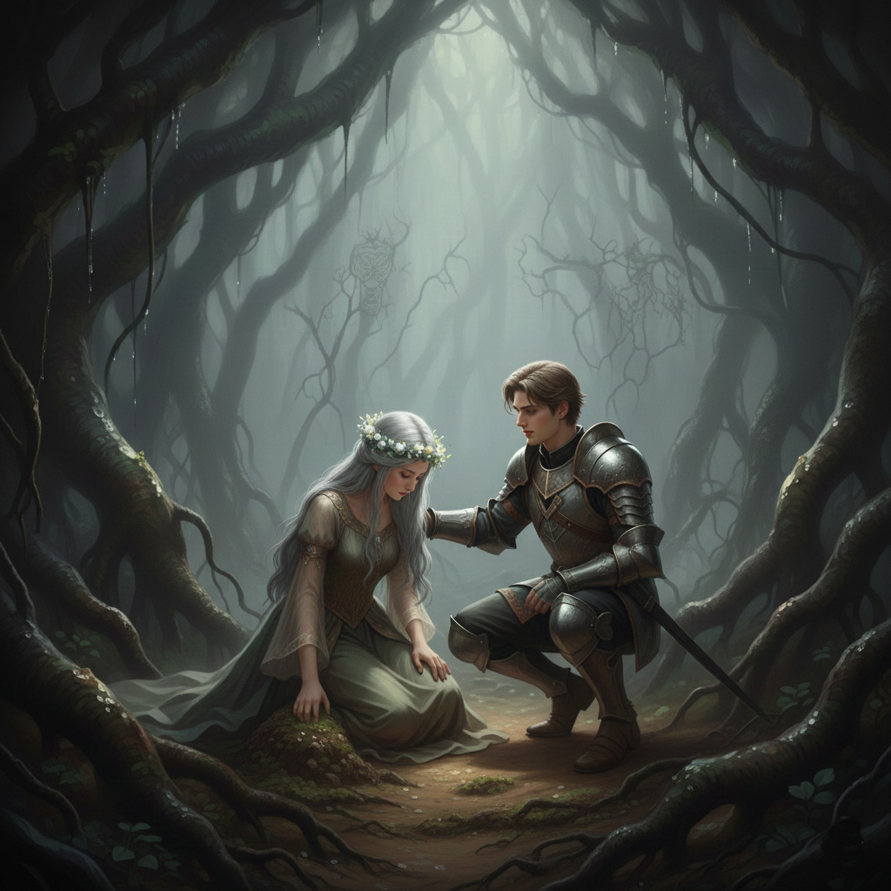
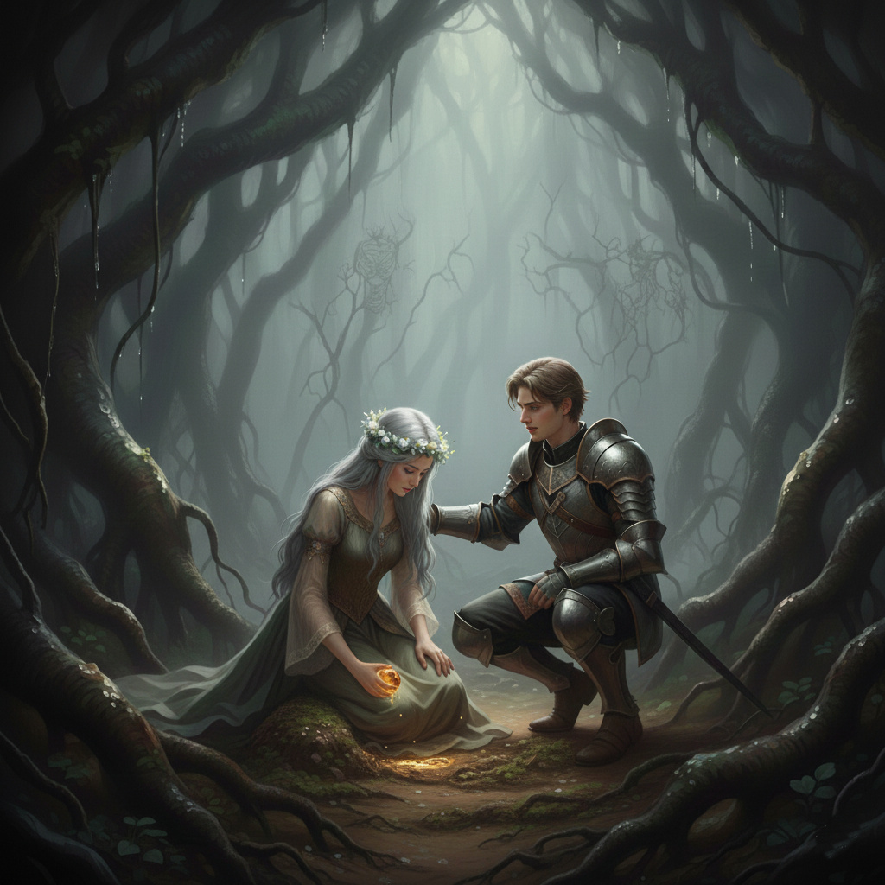
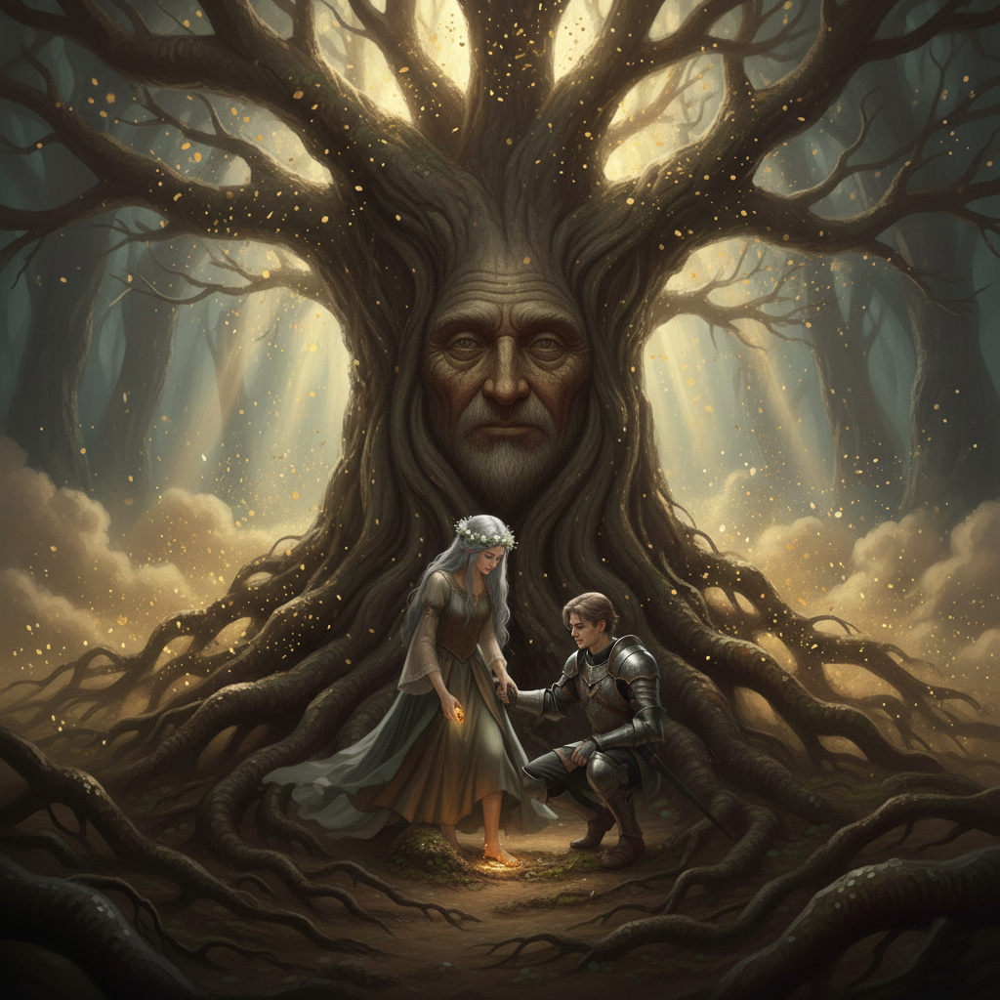

Ajánlom egy kedves barátomnak, aki keresi a pillanatban rejlő örökkévalóságot, és mer hinni a szív órájának szavában.
A Felejtés Hegye mögött a táj kifordult önmagából, mintha a világ alkotóelemei itt keverték volna össze a sorrendet, amit az istenek eredetileg szigorúan megrajzoltak. A napfény, amely máshol vidáman szűrődött át a lombokon, itt alig jutott el a felszínre; helyette a föld mélyéből szivárgó, tompa félhomály uralkodott, ahol a levegő sűrűbbnek tűnt, mintha a múlt évszázadainak pora telepedett volna meg benne. A Gyökerek Erdeje nem dicsőséges lombkoronákkal fogadta őket, hanem hatalmas, göcsörtös fatuskókkal, amelyekből a gallyak mélyen a talajba fúródtak, mintha az ég helyett a föld mélyét akarnák átölelni. Ezek a gyökerek nemcsak úgy simultak a földhöz, hanem mintha élő, lüktető erek lettek volna: helyenként finoman remegtek, mintha a föld alatt áramló, láthatatlan folyók ritmusát követték volna, és a talajon apró, nedves foltokat hagytak, ahol a nedvesség kicsordult belőlük. Itt a levegő nyirkos volt és avarillatú, a csend pedig nem lopott volt, mint a hegyen, hanem ősi és tisztelettudó – olyan csend, amelyben minden lépés visszhangot vert, de nem fenyegetően, hanem mintha a föld maga figyelne, várva, mit mondanak a betolakodók.
Alerion, a lovag, akinek páncélja itt, ebben a nedves félhomályban tompán csillogott a gyökereken megcsillanó páracseppekben és Honóra, az Idő Tündére, akinek ezüstös haja finoman hullámzott a levegő áramlataiban, mintha a szél itt is csak a föld alatti szelek lennének, óvatosan botorkáltak a csúszós gyökereken – lassan haladtak előre. Minden lépésükkel a talaj puhán adódott alattuk, mintha a föld szívesen nyelte volna magába a súlyukat, mégis óvatosnak kellett lenniük, nehogy egy váratlan gödörbe zuhanjanak. Alerion keze állandóan a kardja markolatán pihent, nem fenyegetésből, hanem megszokásból, mert itt, ahol minden fordított volt, a veszélyek is váratlanul fordultak elő.
– Itt minden fordítva van – suttogta Alerion, miközben egy hatalmas, földbe vájt üreg szájánál megálltak. A hangja tompán, szinte elnyelve magát a nedves levegőben, de szemei élesen fürkészték a sötétséget. Az üreg bejárata nem természetes barlang volt, hanem mintha egy óriási gyökér íve formálta volna ki, ami úgy hajlott ívben a föld fölé, mint egy kapu, amit a földanya maga faragott. Az iránytűje, amit a zubbonyába tűzött, valóban a mélybe mutatott: a mágnesnyíl hevesen remegve állt függőlegesen lefelé, mintha a föld mágnesessége itt erősebb lenne, mint az égé. Alerion szíve hevesebben vert, mert tudta, hogy ez a hely nem csupán földrajzi furcsaság; itt a törvények maguk voltak kifordítva, és a legendák szerint azok, akik túl mélyre hatoltak, soha nem tértek vissza ugyanolyanokként.

Ahogy leereszkedtek a gyökerek közé, a sötétség fokozatosan bújt elő, de nem teljes, elnyelő feketeségként, hanem rétegesen, mintha a fényt rétegenként hántaná le róluk. A lejtő meredek volt, de a gyökerek természetes lépcsőként szolgáltak: vastag, csavart ágak, amelyekre mohás bevonat simult, puha, szinte szőrszerű tapintással. A társaság óvatosan tapogatózott, kezeikkel a falakat érintve, ahol a nedves agyag hűvösen simult az ujjaikhoz. A sötétséget nem fáklya, hanem a falakon növő fluoreszkáló gombák halványkék fénye oszlatta el. Ezek a gombák nem közönséges kinézetűek voltak; kalapjuk szinte átlátszó, erekben pulzáló kékes fényt árasztottak, mintha apró csillagok lennének, amelyek a föld alatt rejtőztek el a nappal elől. A fényük nem éles volt, hanem diffúz, puha, mint egy álom szélének derengése, és ahogy haladtak, a járatok falai egyre több ilyen gömböcskével telepedtek meg, mintha a föld élő organizmusként világítana útjukat.
A járatok egyre tágultak, a levegő pedig egyre sűrűbbé vált, tele egy édes-savanykás illattal, ami egyszerre emlékeztetett ősi könyvtárak poros lapjaira és friss eső áztatta erdőre. A falak itt már nem sima agyagot mutattak, hanem fonnyadt gyökérfonatokat, amelyekben apró, szinte észrevehetetlen rovarok surrogtak, mintha a fa élő hálózata lenne, ami figyeli a betolakodókat. Végül egy gigantikus föld alatti csarnokba értek, amelynek mennyezete olyan magas volt, hogy a kékes fény alig érte el, és a távolságban csepegő víz hangja visszhangzott, mint egy távoli, álomszerű dallam. A csarnok oldalfalai hatalmas gyökerekből álltak, amelyek úgy fonódtak össze, mint egy természetes katedrális oszlopai, és a levegőben finom porrészecskék táncoltak a fényben, megteremtve egy misztikus, szinte szakrális légkört. Ennek a csarnoknak a közepén egy felfoghatatlanul öreg fa törzse állt. Ez volt az Ős-Fa. Nem voltak levelei, de a kérgén lévő barázdák arcokat és rúnákat formáztak – arcokat, amelyek mintha kifejezéseket váltogattak volna a fényben: bölcs mosolyok, szomorú szemek, dühös vonások, mindegyik egy-egy elfeledett történetet mesélve. A rúnák nem véletlenszerűek voltak; ősrégi nyelven íródtak, tele girbe-gurba vonalakkal, amelyek szinte mozogtak, ha túl hosszan nézte őket az ember, mintha a fa élő naplója lenne, tele évszázadok titkaival. A törzs vastagsága elképesztő volt: egy ember karjai alig ölelték volna át egy töredékét, és a felszínén finom, szinte érdes mintázat futott végig, ami érintésre melegnek tűnt, mintha vér áramlana benne.
A csarnok levegője hirtelen meg-megrebbent, mintha a fa lélegzett volna, és egy mély, rezonáns zúgás töltötte be a teret. – Az Idő Tündére és a Halandó Lovag... – zúgta a fa. A hangja nem a fülükben, hanem a csontjaikban visszhangzott, mintha a szavak átjutottak volna a bőrön, a húsokon, egyenesen a gerincvelőig hatolva, ahol hideg remegést hagytak maguk után. Nem volt ez ijesztő, hanem mélyen ismerős, mintha a saját vérükben hallanák visszhangzani a szavakat, egy ősi dallamként, amit már rég elfeledtek. Alerion keze megremegett a kardján, de nem húzta ki; Honóra szemei elkerekedtek, és egy pillanatra úgy tűnt, mintha a saját múltja szólna hozzá ebből a hangból.
– Azért jöttetek, hogy lássátok a gyökereket. De a gyökerek nemcsak a földet tartják, hanem az igazságot is. – A fa szavai után csend telepedett, de nem üres csend; a gyökerek finoman surrogtak, mintha suttogtak volna egymásnak, megosztva a titkokat, amiket csak ők ismertek.
Honóra előlépett, léptei halkan koppantak a puha földön, de minden mozdulata súlyosabbnak tűnt itt, mintha a helyiség tudatában lett volna jelenlétének. A bőre halványan vibrálni kezdett, mintha a fa közelsége felébresztené benne az elnyomott mágiát – finom, ezüstös hullámok futottak végig a karján, a nyakán, akár egy belső tűz, amit régóta parázs alatt tartottak. Szemei, amelyek általában nyugodt kékek voltak, most szinte világítottak, tükrözve a gombák kékes derengését, és kezei ökölbe szorultak, miközben a fa törzséhez közeledett. Érezte, ahogy a levegő sűrűsödik körülötte, tele várakozással, mintha a csarnok lélegzetét visszafojtotta volna. – Azt mondják, ismered a családom titkát. Azt mondják, a Szivárvány-tó nem az otthonom volt, hanem a börtönöm. – Szavai rekedtek kissé, tele évszázados keserűséggel, de erővel is, amit a fa jelenléte táplált. Alerion mellette állt, vállai megfeszültek, készen arra, hogy védelmezze, ha a titok túl sötétnek bizonyulna.

Az Ős-Fa egyik hatalmas gyökere megmozdult, lassan, szinte fájdalommal küszködve, mintha évszázadok álmából ébredne. A gyökér vastag volt, mint egy felnőtt férfi dereka, és kérge repedezett, tele mély barázdákkal, amelyekből apró porfelhők szálltak fel a mozgás hatására. Lassan, kaparászva húzódott előre a földön, hagyva maga után mély barázdát a nedves talajban, majd egy sima falfelületet kapart szabaddá a földben. A csarnok falának ez a része eddig rejtve maradt, takarva vastag agyag és moha rétege alatt, de most, ahogy a gyökér elhúzódott, egy hatalmas, szinte fal méretű felület tárult fel, sima, akár egy óriási tükör, de nem üveg, hanem a föld természetes kőzete, ami most várta a fényt. Ahogy a gombák halványkék derengése rávetült, képek kezdtek derengeni rajta – először csak halvány árnyékok, mint ködös emlékek, majd egyre élesebbé válnak: színes foltok, arcok, tájak, amelyek úgy elevenedtek meg, mintha a fal lélegezne velük. A képek nem statikusak voltak; finoman mozogtak, akár egy élő freskó, mesélve a történetet, amit Honóra családja évszázadokon át titkolt. A levegő megremegte a varázstól, és a társaság lélegzete elakadt, miközben a múlt kezdte kibontani fonálait a jelen előtt.
A falon derengő képek egyre élénkebben kezdtek pulzálni, mintha a kő maga lenne a vászon, amin a múlt vérrel és fénnyel íródott meg. Először csak homályos alakok villantak fel: kecses, ezüstbőrű tündérek, akik ujjhegyeikkel az idő fonálait fonták, akár a sors szövőnői, de arcukon nem öröm, hanem reszkető rettegés ült. Aztán élesedtek a jelenetek – szigetek, amelyek nem a tengeren, hanem a levegőben lebegtek, hurkokban tekeredve, ahol a napok ismétlődtek, mint végtelenül ismételt dallamok, és a tündérek arcai örökösen fiatalok maradtak, de szemeikben a üresség mélyült. Honóra szíve hevesen vert, miközben ezek a képek a saját emlékfoszlányaival keveredtek: a Szivárvány-tó nyugodt vize, a tóparti virágok, amiket gyerekként szedett, most hirtelen kalitka rácsaként torzultak el. A csarnok levegője sűrűbbé vált, tele egy édes, szinte fullasztó illattal, ami a fa kérgéből áradt, és a gombák kék fénye most vöröses árnyalatot vett fel, mintha a vérontás emlékét idézné.
– Honóra – kezdte a fa –, a néped nem a nyugalom őrzője volt. Ők voltak az Idő-szövők, akik féltek a mulandóságtól. Azért teremtették az Időhurok-szigeteket, mert nem bírták elviselni a veszteséget. Téged nem azért tettek a tóhoz, hogy vigyázz az időre... hanem azért, mert te voltál a "Hiba".
A fa hangja most mélyebbé vált, szinte morajlott, mint egy távoli vihar, ami a föld alatt gyűlik erejét, és a szavak minden egyes szótagjával a csarnok falai enyhe remegést mutattak, mintha a gyökerek maguk is fájnának a megidézett emlékektől. Honóra szemei kitágultak, a falon látható képek most rá összpontosultak: egy csecsemő alakja, aki nem a hurkokban született, hanem egy egyenes vonalban, csillagfényben fürdetve, miközben a tündérek körülötte suttogtak, kezükben fonálgombolyagok, amik sötéten gomolyogtak, mint mérgezett kígyók. A lány keze önkéntelenül a mellkasára siklott, ahol most egy tompa fájdalom lüktetett, mintha a szíve maga próbálna kiszabadulni a régi béklyókból. Alerion oldala mellett állt, vállai megfeszültek a páncél alatt, ujjai a kardmarkolaton fehérlettek a szorítástól, de nem szólt; csak figyelt, miközben a saját vérében érezte a fa szavainak visszhangját, ami most már nem csak csontokban, hanem a lelkében is rezonált.
– A Hiba? – kérdezett vissza Alerion, és védelmezően a lány mellé lépett. Hangja rekedt volt, tele haraggal és kétellyel, amit eddig csak a csatamezőkön érzett; most azonban ez a harag nem ellenség ellen szólt, hanem egy egész világ ellen, ami Honórát rabolta el előle. Közelebb húzódott hozzá, karja finoman súrolta a lányét, egy csendes ígéretként, hogy itt van, bármi is táruljon fel. A kíséretük – azok a néhány hűséges harcos és tudós, akik idáig követték őket – hátrébb húzódtak, arcukon árnyékok táncoltak a remegő fényben, és egyikük, egy öreg látnoknő, halkan suttogott imát a földanya nevében, mintha attól félne, hogy a titok darabokra szaggatja a levegőt.
– Te voltál az egyetlen, aki nem körforgásban született – folytatta az Ős-Fa. – Te lineáris voltál. Te növekedtél, változtál, és a lelked a jövő felé vágyott. A néped számára ez fenyegetés volt a tökéletes állandóságra. A harmincadik nap hurka nem ajándék volt neked, hanem egy aranykalitka, hogy soha ne válhass azzá, akivé rendeltettél: a Kezdet és Vég Kapujává.

A szavak most már nem csak hangként zuhantak rájuk; a fal képei elevenedtek meg teljes erővel, akár egy élő álom. Látható volt a hurkok szigete: végtelenül ismétlődő napfelkelték, ahol a tündérek ugyanazt a táncot járták évszázadokon át, arcukon a mosoly megdermedt, mint viaszmaszk, de szemükben a rettegés égett, mert tudták, hogy a kör bezárul, de soha nem szakad meg. Aztán jött Honóra képe, fiatalabb, szabadabb: futkos a szigetek között, ujjai közt szikrák pattognak, mert benne nem ismétlődés, hanem előrehaladás lakozott, egy egyenes út, ami a csillagokig vezetett. A tó most kalitként jelent meg – csillogó, de hideg rácsok, ahol a víz nem simogatta, hanem fogva tartotta, és a harmincadik nap hurka, az a legendás ajándék, most sötét árnyékként tornyosult fel, fonáljai a lány végtagjait kötözték meg, miközben a tündérek hátuk mögött suttogtak: "A Hiba... ő meg fogja törni a kört." A csarnok levegője most már szinte tapinthatóvá vált a fájdalomtól; a gombák fénye lüktetett, akár egy seb, és a gyökerek finoman surrogtak, mintha siratták volna az elveszett szabadságot. Honóra lélegzete szaggatottá vált, szemei könnyekkel teltek, de nem hullottak; ehelyett a könnyek most mágikus szikrákká változtak, apró kékes villanásokká, amelyek a földbe hullottak és elpárologtak, akár a fa gyökerei szívták magukba.
Honóra térdre rogyott. Minden, amit eddig hitt – a küldetése, az otthona, a származása –, egy nagy, kegyes hazugságnak bizonyult. Nem őrizte az időt, hanem el volt zárva tőle. A puha föld puha ölelésként fogadta, de ez most nem vigaszt nyújtott; inkább emlékeztetett rá, mennyire törékeny minden, amit épített. Kezével belemart a nedves talajba, ujjai közt agyag és moha préselődött össze, miközben a teste reszketett, akár egy falevél a szélben. Alerion leguggolt mellé, keze gyengéden a vállára tette, de nem szólt; tudta, hogy ez a pillanat csak az övé lehet. A fal képei most lassan halványultak, de a nyomuk ott maradt a lány lelkében: egy repedés, ami végre szabaddá tette a benne rejlő vihart. A kíséret csendben figyelt, egyikük sem mert megmozdulni, mert érezték, hogy ez a pillanat nem csak Honóráé, hanem az egész világé, ahol az idő eddig hurkokban raboskodott.
– Ezért voltál olyan "lineáris" a logikai feladványoknál – döbbent rá Alerion. – Ezért nem értettél egyet a városban a megállással. Benned kódolva volt a haladás.
Szavai halkan csengtek a csarnokban, de erejükben ott bujkált a felismerés öröme, keveredve a fájdalommal. Visszagondolt azokra a pillanatokra: a rejtvényeknél, ahol Honóra mindig a váratlan utat választotta, nem a körbezárt megoldást; a város falai között, ahol ő megállt volna a biztonságért, de a lány előre nézett, szemeiben a horizont ígérete. Most minden értelmet nyert: nem makacsság volt az, hanem sors. Alerion szemei most már nem a lovagéi voltak, hanem egy társáé, aki végre látta a lány igazi arcát – nem a tó őrzőjét, hanem a kaput, ami kinyílik a jövőre.
Az Ős-Fa egy apró, borostyánszínű magot ejtett a lány elé. A mag leesése nem volt halk; tompán koppant a földön, majd lassan gördült Honóra felé, hagyva maga után egy vékony, aranyszínű nyomot a talajban, mintha a fa könnyei csillogtak volna rajta. A mag felülete sima volt, de belül lüktetett, akár egy apró szív, tele meleg, narancssárga fénnyel, ami átszűrődött a héjon, és a levegőt megtöltötte egy édes, mézes illattal, ami egyszerre csábított és fenyegetett. A kíséret közelebb lépett, de megállt, mert érezték a mágia súlyát: ez a mag nem csupán tárgy volt, hanem választás, ami hegyeket mozdíthatott el.

– Ez a néped utolsó emléke. Ha lenyeled, visszakapod a teljes hatalmadat, de elfelejted a lovagot és a vándorlást, mert az Idő-szövők hideg logikája visszaveszi az uralmat a szíved felett. Ha viszont eltemeted, tündér maradsz – halandóbb, sebezhetőbb, de szabad.
A fa szavai után mély csend telepedett a csarnokba, csak a csepegő víz hangja tört meg, akár egy óra ketyegése, ami most először tűnt kegyetlennek. Honóra keze megremegett, ahogy a mag felé nyúlt, ujjai szinte érezték a melegét, ami most már a bőre alá hatolt, ígérve a régi erőt – a hurkok uralmát, ahol semmi sem változik, de minden tökéletes. De mellette Alerion keze ott pihent, emlékeztetve a vándorlásra: a hegyekre, a csillagokra, a közös nevetésre a tűz mellett. A fal képei most már teljesen elhaltak, de a csarnok mintha lélegzett volna velük, várva a döntést, ami nemcsak egy mag sorsát, hanem egy egész világét pecsételi meg.
A csarnokban megállt a levegő, mintha a föld alatti világ maga is visszatartotta volna a lélegzetét, várva a pillanat súlyát. A gombák kékes fénye most már alig pulzált, hanem egyenletesen derengett, mint egy haldokló csillag utolsó sugara, és a gyökerek surrogása elhalt, hagyva helyette egy mély, szinte tapintható csendet, ahol még a szívverések is visszhangot vertek a hatalmas térben. Ez volt a legnehezebb "igazság", amivel szembe kellett nézniük: a múltjuk alapkövei hamisak voltak. Nem csak repedtek, hanem porladtak, akár egy régi vár alapja, amit évszázadok álnok szelei martak szét; Honóra származása, ami eddig a tó csillogó vizeiben tükröződött, most sötét árnyékként torzult el, és Alerion saját halandó élete, amit a lovagi esküi kötöttek gúzsba, most egy nagyobb, koszosabb hazugság részeként tűnt fel. A kíséretük – azok a csendes árnyak, akik idáig követték őket a gyökerek labirintusában – most még távolabb húzódtak, arcukon a megdöbbenés maszkja feszült, mert érezték, hogy ez a pillanat nem csak a két főszereplőt érinti, hanem az egész világot, ahol az idő eddig hurkokban raboskodott, most pedig szabadulni készül.
Honóra a magra nézett, majd Alerionra. A borostyánszínű kis gömb most már nem csábítóan lüktetett, hanem hidegen csillogott, akár egy mérgezett ékszer, tele a régi hatalom ígéretével, ami egyszerre vonzotta és rémített. A lány szemei, amelyekben eddig a tó kékje csillogott, most mélyebb árnyalatot vettek fel, tele kérdésekkel és félelemmel, miközben tekintete Alerion arcán pihent: a lovag vonásain, ahol a sebhelyek finom hálózata mesélte a csaták történetét, és a szemeiben ott bujkált az a csendes erő, amit nem a páncél, hanem a szíve adott neki. Alerion nem szólt. Tudta, hogy ez az a döntés, amit még ő sem segíthet meghozni a logikájával. Nem most jött el az ideje a lovagi tanácsoknak, a térképeknek vagy a kardjának; ez a pillanat Honóráé volt, egy belső viharé, ahol a választás nem fegyverrel, hanem a lélekkel dől el. Keze még mindig a vállán pihent, meleg érintéssel, ami nem erőltetett vigaszt, hanem csendes támaszt nyújtott, miközben a saját szíve hevesen vert, mert félt: félt elveszíteni azt a törékeny köteléket, amit a vándorlás kovácsolt belőlük, de tudta, hogy a szabadság ára néha a magány.
Honóra felemelte a magot, de nem vette a szájához. Ujjai közt a kis gömb meleg volt, szinte élő, mintha a benne rejlő mágia finoman pulzált volna, ígérve a régi dicsőséget – a hurkok uralmát, ahol az idő megáll, és a veszteség soha nem fáj. De ahogy a tenyerében tartotta, a képek villantak fel előtte: a tóparti emlékek, amik most már nem otthonnak, hanem börtönnek tűntek; a vándorlás éjszakái, ahol Alerion tűz mellett mesélt a csillagokról; a hegyek, ahol együtt néztek szembe a viharral. Lassan, szinte ceremóniával hajolt le, és a lába előtt lévő sötét, termékeny földbe nyomta, és rátiport. A föld puha volt, akár egy nyitott seb, ami mohón nyelte el a magot; egy halk reccsenés hallatszott, ahogy a héj megrepedt, és aranyszínű nedv szivárgott belőle, eláztatva a talajt, ami most finoman megremegett, mintha a gyökerek maguk is érezték volna a változást. A mag eltűnése nem volt drámai robbanás, hanem csendes elmúlás, mint egy régi varázslat feloldódása, és a levegő hirtelen könnyebbé vált, tele egy friss, földillattal, ami a szabadság első leheletét hozta magával.
– Nem akarok kapu lenni, ha a kapun nem léphetünk át együtt – mondta tisztán. – Legyek inkább a "Hiba" a rendszerükben, mint egy tökéletes emlék az ő világukban.
Szavai nem suttogásként, hanem erős, tiszta hangként töltötték be a csarnokot, akár egy harangütés, ami végleg szétszórja a ködöt. Hangja nem remegett, mert a döntés pillanatában valami megváltozott benne: a "Hiba" nem átokként, hanem áldásként csendült fel, egy repedésként a tökéletes üvegben, ami végre hagyja áramlani a fényt. Alerion szemei felragyogtak, egy pillanatra úgy tűnt, mintha könny csillogna bennük, de mosolyra húzódott a szája, büszkeséggel telve, mert látta, ahogy Honóra végre a saját útját választja – nem a népe hurkait, hanem a közös horizontot. A kíséret halkan sóhajtott fel, egyikük, a látnoknő, kezeit összefonta, és egy halk mantrát mormolt, ünnepelve a születést, ami most zajlott: egy új kezdetét, ahol a tündér már nem őriz, hanem teremt.
Az Ős-Fa hatalmasat rázkódott, mintha nevetne. A törzs megremegett, a barázdákban formált arcok most mosolyra húzódtak, akár egy bölcs öregemberé, aki végre látja a diákját kibontakozni, és a gyökerek finoman surrogtak újra, de most örömmel, akár egy tapsvihar a föld alatt. A remegés végigfutott a csarnokon, porfelhőket kavarva fel, ami aranyporrá változott a fényben, és a levegő megtelt egy mély, rezonáns kacagással, ami nem ijesztő, hanem felszabadító volt – a fa nevetése, ami évszázadok óta először igazi örömből fakadt. – A gyökerek az igazat mondták. Te már nem a néped gyermeke vagy, hanem az úté.

A szavak után a fa törzsén egy új járat nyílt meg, amely nem lefelé, hanem meredeken felfelé vezetett – egyenesen az égbolt alá, amit már nem árnyékolt be semmilyen családi legenda. A nyílás lassan tárult fel, akár egy seb gyógyulása: a kérget finom repedések szabdalta meg, amelyekből friss, zöld hajtások csúszkáltak elő, és a járat falai simán simultak, tele apró, világító erekkel, amik most már nem kékesen, hanem aranysárgán ragyogtak, útmutatóként a felszín felé. A levegő hirtelen áramlott be rajta, friss szellőként, tele a külvilág illataival – eső áztatott fű, távoli virágok, és a nap meleg sugarai, amik most már nem ellenségként, hanem hívogatóként szűrődtek be. Honóra felnézett, kezét Alerionébe kulcsolta, és együtt léptek előre, a kíséretük mögöttük, mert tudták: ez a járat nem csak kiút, hanem új kezdet, ahol a gyökerek már nem fogva tartanak, hanem táplálnak, és az égbolt végre tiszta, árnyékok nélkül. A fejezet így zárult, de a történetük csak most kezdődött igazán – egyenes úton, ahol a "Hiba" lesz a legfényesebb csillag.